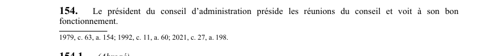

art-154-LSST : présidence des réunions du conseil
Un article du wiki ⚖️ Recueil législatif
En bref
Le président du conseil d'administration préside les réunions du conseil et voit à son bon fonctionnement. Il s'agit d'une obligation.
🌐 LegisQuébec · 📄 PDF officiel (page 41)
Texte officiel : capture du PDF

Toucher l'image pour l'agrandir🔗 Ouvrir a cette page : LSST.pdf : page 41 · texte a jour au 26 mars 2024
📚 Source légale : 1979, c. 63, a. 154; 1992, c. 11, a. 60; 2021, c. 27, a. 198. · LégisQuébec
Voir aussi
- art. 153 : abstention vote conflit intérêt · obligation : un membre doit s'abstenir de voter sur les décisions du conseil d'administration en vertu desquelles un contrat ou un autre avantage peut lui être accordé ou être accordé à une entreprise dans laquelle il est intéressé.
- art. 153.1 : incompatibilité fonctions associations syndicales · faculté : une personne occupant une fonction de direction au sein d'une association d'employeurs ou d'une association syndicale ne peut cumuler les fonctions de membre du conseil d'administration de la Commission.
- art. 154.1 : disposition abrogée · disposition-abrogee.
- art. 154.2 : disposition abrogée · disposition-abrogee.
- 🔧 Modifié par : LMRSST · Article modificateur de la LMRSST.
- ↑ Loi : LSST
Pages qui pointent ici (5)
- art-153-LSST : abstention vote conflit intérêt Recueil législatif
- art-153.1-LSST : incompatibilité fonctions associations syndicales Recueil législatif
- art-154.1-LSST : disposition abrogée Recueil législatif
- art-154.2-LSST : disposition abrogée Recueil législatif
- art-198-LMRSST : modifie l'art. 154 LSST Recueil législatif